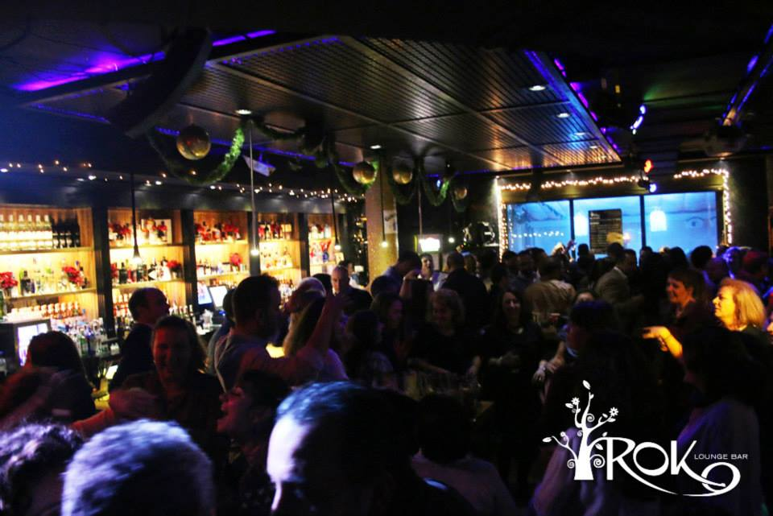

Discoteca, cafetería, patios árabes, zonas vips... diferentes ambientes, buena música y diversión de la noche Jerezana. Apertura Noviembre 2014
Buda Bar
En Buda Bar te ofrecemos un sin fin de posibilidades para que salir a despejarte no te cueste tanto!!Bonocopas, Botellas en promoción, Cupcakes, Cubos de cerveza y tinto... Todo esto y mucho más en un ambiente inigualable, un lugar único para disfrutarlo todo el mundo!!
La Galeria Premium Club
La Galeria Premium Club es la discoteca más grande de la provincia de Cádiz, formada por un gran equipo de Gogos, Djs, espectaculos...
Iroko

Iroko Lounge bar, la mejor música y ambiente en la avenida principal de Jerez. Disfruta de nuestra acogedora terraza para un café o tu copa preferida
Kapote
En la Avenida con más historia y prestigio de Jerez rodeado de los más selectos hoteles, restaurantes y locales de copas se encuentra Kapote Kafé Kopas Jerez en el edificio la Yeguada en la Avenida Álvaro Domecq. Desde las cuatro de la tarde ofrecemos a nuestros amigos un nuevo sentido para pasar de la tarde a la noche sin que estas parezcan encontrar su final
Makao
Disponemos de dos salas completamente diferentes con dos estilos en las que lo pasaras en grande
Carnaval
La Bailaora María del Mar Moreno será Pregonera de la fiesta, Manuel Algeciras González , se le entregará este año la Insignia de Honor, Moisés Ruiz será Pregonero del Dios Baco
Sábado 7 de febrero
A las 20.30 horas en el Teatro Villamarta será el pregón del Carnaval a cargo de María del Mar Moreno y la entrega de la Insignia de Honor a Manuel Algeciras.
Domingo 8 de febrero
A las 13 horas, en la Sala Paúl convivencia de Agrupaciones Carnavalescas
Jueves, 12 de febrero.
A las 10.00 horas, Pasacalle del Concurso Escolar de Disfraces por el centro de Jerez con salida desde la Plaza del Banco y llegada al patio de San Fernando del Alcázar, dentro del programa Carnaval en la Escuela
A las 20.30 horas, certamen provincial de cuplés “Selu Dormido” en la Plaza Canterbury
Viernes 13 de febrero
En el Centro Blas Infante, dentro del horario escolar, habrá la Gran Gala de Entrega de Premios del Carnaval en la Escuela, dentro del programa Carnaval en la Escuela
Sábado 14 de febrero
A las 18.30 horas, Gran Cabalgata del Humor dedicada a San Valentín. Itinerario por el centro de Jerez con salida a la calle Muro y llegada al patio San Fernando del Alcázar.
A las 21.00 horas, Fiesta del Carnaval en El Alcázar, con la entrega de premios a los mejores disfraces de la cabalgata, música yorquesta, actuaciones de agrupaciones carnavalescas.
El Barrio
El Palacio Municipal de Deportes de Jerez acogerá el concierto que ofrecerá “El Barrio” el próximo 7 de febrero de 2015
Las entradas están a la venta desde 30€. El Barrio ha actuado en Jerez de la Frontera en 3 ocasiones, la última vez que actuó en Jerez de la Frontera fue en 2012 en la sala Palacio Municipal de Deportes de Chapín.
Para comprar tus entradas haga click en el siguiente aquí
Festival de Jerez
Semana Santa 2015
La Semana Santa en Jerez es el acontecimiento religioso más importante de la ciudad
Se celebra anualmente en la semana del primer plenilunio de la primavera y ha sido declarada de interés turístico nacional desde 1993 y está a la espera para que en 2015 sea declarada de Interés Turístico Internacional
La Semana Santa de Jerez es una de las más importantes de Andalucía en lo que a número de hermandades y a calidad en sus imágenes se refiere.
Cuarenta y tres hermandades de penitencia, a las que también se suma la hermandad del Señor resucitado, llenan de contenido una semana, la que va del Sábado de Pasión al Domingo de Resurrección, en la que de nuevo cobran vigencia las raíces históricas de esta particular celebración.
La Feria del Caballo es una feria que se celebra cada mes de mayo en Jerez de la Frontera, declarada de Interés Turístico Internacional
Durante las fiestas y entre semana desfilan caballos con sus jinetes que, como antaño, se siguen vendiendo. Durante toda la semana, sólo durante el día, hay un gran desfile de coches de caballos por las calles centrales
La Feria cuenta actualmente con más de 250 casetas, cada una con su particular ambiente y especialidades gastronómicas
La mayor parte de las casetas compiten en los concursos de mejor tapa y mejor decoración.
Las bebidas típicas de la feria de Jerez son el oloroso y el vino fino, que los menos puristas gustan de mezclar este último con sodas de lima, combinación conocida como rebujito.
La vestimenta diurna más habitual en Feria es el traje de corto, si se monta a caballo, y traje de gitana (o traje de flamenca) para las mujeres, y de media etiqueta durante la noche.
MotoGP 2015
El Circuito de Jerez es sede del Campeonato del Mundo de Motociclismo desde 1987, fecha del primer Gran Premio organizado en nuestras instalaciones
Desde entonces y hasta nuestros días, el trazado jerezano es sede oficial y permanente del calendario deportivo del MotoGP, convirtiéndose por derecho propio en una de las pruebas más emblemáticas del campeonato por diversas razones, entre ellas, el especial ambiente que rodea a esta prueba con un peregrinar anual de miles de aficionados poblando cada una de las tribunas y pelousse del circuito para animar sin cesar a sus ídolos.